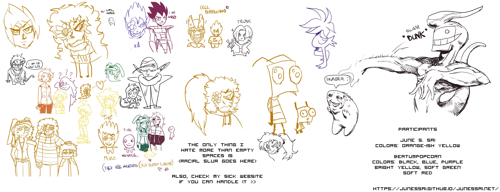

Posted on July 11, 2022, 13:28
Last updated on July 11, 2022, 13:28
And here we are again, back at the disco, back at the flashing lights.
Oh yeah, there's new art stuff too, like, what the fuck?
And why does my artstyle look radically different and better than it did in
previous posts?
You buffoon, you fucking dumbass, can't you see I'm not the only one drawing?
That's right, baby, we have a guest today, and it's BeatumPopcorn, if you're still
dumb enough to not have figured that out yourself, dumbass.
I've been drawing a lot more recently, specially in Aggie.io's, mostly with people like
rameNwaterbottle and BeatumPopcorn, and that's mostly because they call me first, because
I'm usually too nervous to do it myself, but I like it quite a lot, even though I feel
EXTREMELY intimidated at doing anything with anyone with higher skills than me
Most of this Aggie.io session consisted of Dragon Ball and our little characters
I've ended up drawing (very poorly) an older Big Whiskey and his son Lil' Whiskey
and Beatum ended up changing him quite a bit so he doesn't just look like a smaller version
of Big Whiskey and actually stands apart a little more, and I really like that, even if it's
really hard to see it with the yellow brush he went with
There's also Big Whiskey with his hair tied, since Beatum asked why never ties his hair
And about the Dragon Ball stuff, to put it simply; I've been revisiting Dragon Ball recently
ever since I got PCSX2 to run properly on my computer and got the chance to revisit one of
my favorite games in the PS2 era; Dragon Ball: Infinite World, and I loved it just as much
as I did when I first played it back in the day, and with that, my love for all things
Dragon Ball came flying right back to me, and now I can't stop saying that "I'm the prince
of all Saiyans" everywhere I go with a stupid Vegeta voice
Also Mega64's Buu Saga video happened.
But that's about it, for real.
It was incredibly fun to draw with Beatum, and if you didn't got the chance to check any
of his artwork yet, you should head to the fanart section and look up the stuff he made
for me in there, and maybe even follow him on Newgrounds (badass) or Twitter (absolute shit)
but in the meanwhile, that's all I have for you, for now
I hope you're having a nice evening, or whatever
I'll see you at the end of the sunset
Till' we meet again.